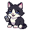
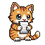

User / group identity marker. 3 sizes (sm/md/lg), 3 content types (image/initials/icon). Used in topbar, group switcher, shared-expense participant rows. Fills with primary color by default — muted + accent variants for group colorization.


<!-- Initials (fallback) --> <span class="avatar">JP</span> <span class="avatar avatar-sm avatar-muted">MK</span> <!-- Image --> <span class="avatar avatar-lg"> <img src="/path/to/photo.jpg" alt="Juan Pérez"> </span> <!-- Icon --> <span class="avatar avatar-accent" aria-label="Grupo familiar">👥</span> <!-- Stacked group --> <div class="avatar-stack"> <span class="avatar avatar-sm">JP</span> <span class="avatar avatar-sm avatar-accent">MK</span> </div>